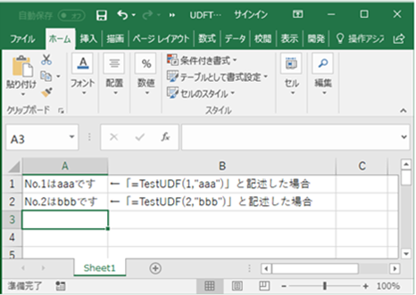
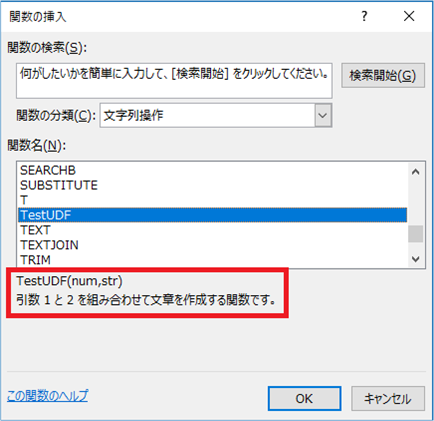
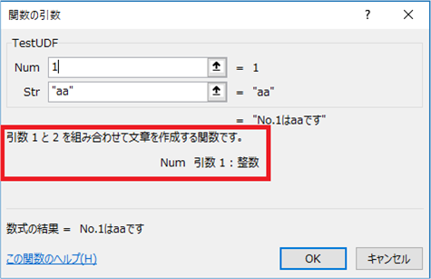
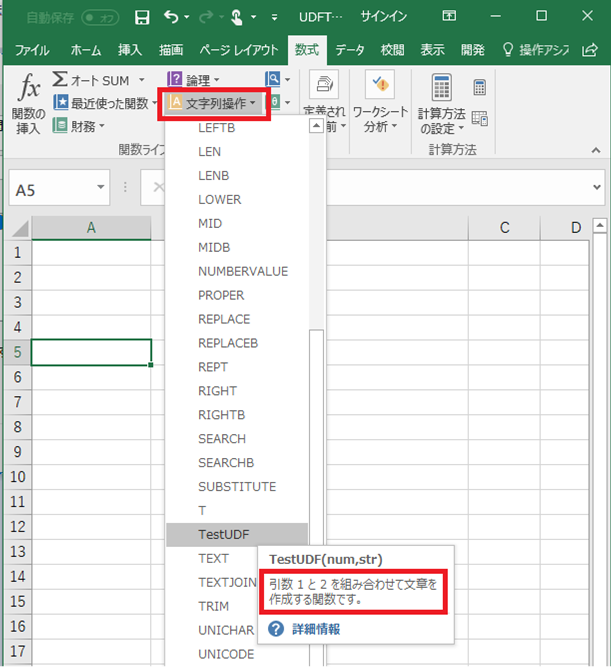
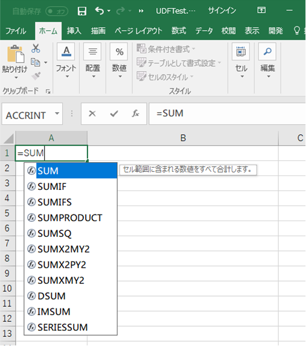
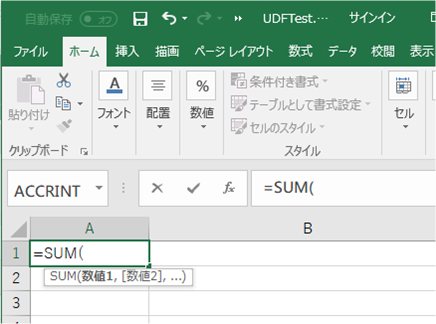
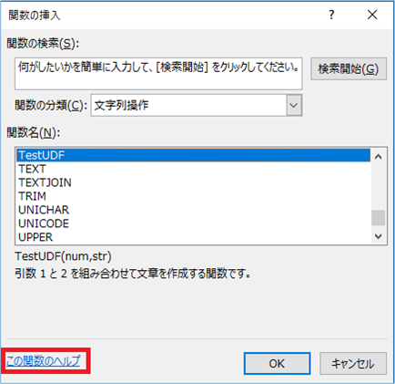
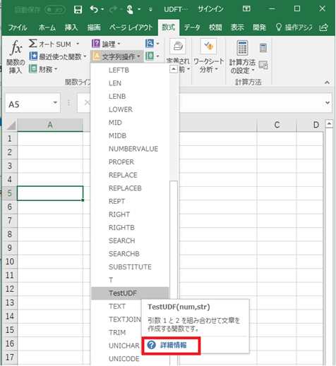

(※ 2017 年 11 月 21 日に Japan Office Developer Support Blog に公開した情報のアーカイブです。)
こんにちは、Office 開発サポート チームの中村です。
Excel には、セルに設定する式として、SUM() のように計算に関するものや、IF() のように論理条件を制御するものなど、様々なワークシート関数が用意されています。既存のワークシート関数で要望を満たすものがない場合、マクロで実装した独自処理を、ユーザー定義関数として登録することができます。
このブログを訪れる方の多くは、ユーザー定義関数を登録すること自体はご存知の方が多いかと思いますが、このようなユーザー定義関数を作成するときにその関数に機能説明やヘルプを追加する方法について、公開情報からは分かりづらい点もありますので、本記事で紹介したいと思います。
1. ユーザー定義関数の作成
関数説明の登録やヘルプのリンクの前に、まずはユーザー定義関数を登録する方法を確認します。
ユーザー定義関数の作成は、VBA の標準モジュールに Function 関数を記述するだけですぐに利用できます。以下の例は、TestUDF という名前の関数を作成し、引数 1 に数値、引数 2 に文字列を渡すと、これらを組み合わせて文章を作成して返却する関数です。(Public でなくともユーザー定義関数として利用できます。アドインなどで複数ブックからの利用を想定している場合は Public を付与します。)
1 | Public Function TestUDF(num As Integer, str As String) As String |
このような VBA コードを追加した状態でシート上でセルに直接関数を入力すると、すぐに利用できます。

図 1. TestUDF 利用イメージ
ただこのままの状態では、Excel に標準で用意されているワークシート関数で表示される利用方法の説明やヘルプ ファイルなどが表示されません。
2. 関数の情報を登録する
関数を任意のカテゴリに追加したり、リボン メニューの [数式] タブ – [関数の挿入] で確認できる関数の説明やヘルプをユーザー定義関数にも表示させるには、Application.MacroOptions メソッドを実行します。ユーザー定義関数の機能を提供するマクロ ファイルのWorkbook_Open イベントなどで登録するよう実装できます。
タイトル : Application.MacroOptions メソッド (Excel)
アドレス : https://msdn.microsoft.com/ja-jp/vba/excel-vba/articles/application-macrooptions-method-excel
例えば以下のように記述して実行すると、下図の画面キャプチャのようにユーザー定義関数の説明を表示できます。
Sub RegisterTestUDF()
Application.MacroOptions Macro:="TestUDF", Description:="引数 1 と 2 を組み合わせて文章を作成する関数です。", _
Category:="文字列操作", ArgumentDescriptions:=Array("引数 1 : 整数", "引数 2 : 文字列"), _
HelpFile:="http://www.microsoft.com/help/helpPage.html"
End Sub
図 2. 関数の説明 1

図 3. 関数の説明 2

図 4. 関数の説明 3
補足
なお、残念ながら以下のようなセル入力時の関数一覧のツールチップや、関数入力時のインテリセンスは、ユーザー定義関数については表示することはできません。

図 5. ユーザー定義関数では定義できない情報 1

図 6. ユーザー定義関数では定義できない情報 2
3. ヘルプ情報を登録する
Application.MacroOptions メソッドでは、HelpFile パラメーターで、ユーザー定義関数にヘルプ情報をリンクすることもできます。先述のサンプル コードにもすでに記載してあります。
ヘルプ ファイルをリンクすると、関数の一覧で「この関数のヘルプ」をクリックしたときに、リンクしたヘルプ ページが表示されます。

図 7. 関数のヘルプ
注:
以下のようにカテゴリから関数を選択するときに表示されるヒントの [詳細情報] からヘルプ ページを検索する動作はカスタマイズできません。既定の Excel ヘルプからの Excel 関数に関する記事の検索結果が表示されます。

図 8. 関数の詳細情報
この HelpFile パラメーターに指定できるファイルには、以下ような種類があります。
a. Web サイトの URL (例 : HelpFile:=”http://www.microsoft.com/help/helpPage.html“)
Web サイト上にヘルプページを公開し、URL を指定することができます。最新のExcel 2016 では、Excel 標準のヘルプもすべてオンラインになっています。
なお、ローカル PC に .html ファイルを格納して、ローカル パスを指定することはできません。
b. .chm ファイル (例 : HelpFile:=”C:\AppName\HelpFile.chm”)
インターネットに接続できない環境などでは、ローカル PC 等に .chm 形式で作成したファイルのパスを指定することもできます。
ただし、.chm を作成する「HTML Help Workshop」アプリケーションは既にサポートを終了した製品となります。現在も以下のリンクよりダウンロードを行うことはできますが、作成方法については開発者の皆様自身でご解決ください。
関連情報
タイトル : カスタム ヘルプ トピックの作成
アドレス : https://msdn.microsoft.com/ja-jp/library/cc389851.aspx
タイトル : Microsoft HTML Help Downloads
アドレス : https://msdn.microsoft.com/en-us/library/windows/desktop/ms669985(v=vs.85).aspx
タイトル : HTML Help Workshop and Documentation
アドレス : https://www.microsoft.com/en-us/download/details.aspx?id=21138
c. .hlp ファイル(例 : HelpFile:=”C:\AppName\HelpFile.htm”)
ローカル PC 等に格納した WinHelp (.hlp) 形式のファイルのパスを指定することもできます。
ただし、WinHelp 形式は古いファイル形式となりますので、Windows Vista 以降の OS では既定では開くことができません。以下のサポート技術情報の [解決策] でご案内している更新プログラムを適用する必要があります。また、Windows 10 向けには更新プログラムは用意されておらず、WinHelp ファイルはサポートされません。
.hlp ファイルを開くのに必要な更新プログラム
文書番号 : 917607
タイトル : Windows ベースのプログラムでヘルプを開こうとすると、「機能は含まれていません」または「ヘルプはサポートされていません」とエラーが表示されます
アドレス : https://support.microsoft.com/ja-jp/help/917607
参考資料
タイトル : ヘルプ ファイル (WinHelp)
アドレス : https://msdn.microsoft.com/ja-jp/library/ew744dk7.aspx
今回の投稿は以上です。